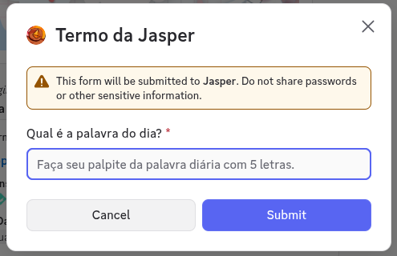
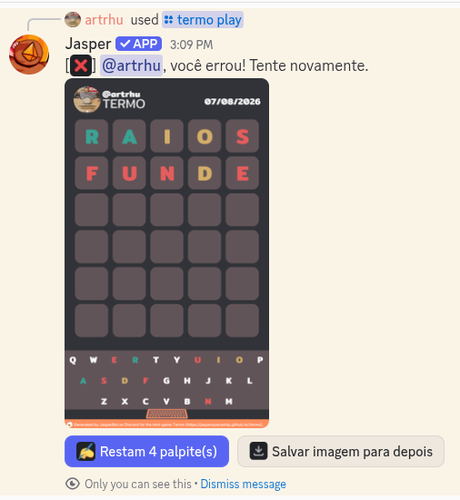
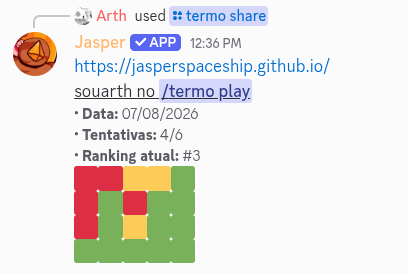
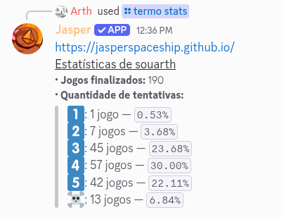
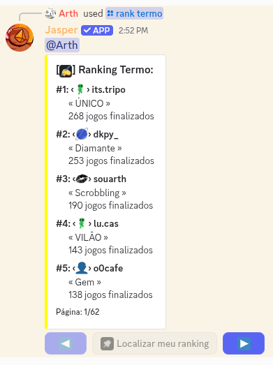

➥ Termo é meu jogo de palavras diário: todo dia eu sorteio uma palavra de 5 letras e você tem
6 tentativas pra descobrir qual é. É o mesmo jogo pra todo mundo no mesmo dia, então dá pra comparar
o resultado com os amigos. É de longe o comando mais usado que eu tenho.
➥ Segue um pequeno tutorial de como jogar:
1. Use o comando /termo play. Vou abrir um formulário pedindo o seu
palpite da palavra do dia, com 5 letras.

2. A cada palpite eu devolvo uma imagem mostrando, letra por letra, o que você acertou de posição, o
que existe na palavra mas está no lugar errado, e o que não existe. Junto vem um botão dizendo quantos
palpites ainda restam, pra você continuar sem digitar o comando de novo.

3. O palpite precisa ser uma palavra que eu conheça. Se eu não reconhecer, eu te aviso e você pode
tentar outra:
palavra desconhecida não gasta tentativa.
4. Junto do jogo vêm mais três botões:
Salvar imagem para depois, que te manda o resultado nas
mensagens diretas,
Ver estatísticas e
Compartilhar este jogo.
5. É
um jogo por dia. Quando você acerta a palavra ou gasta as 6 tentativas, o jogo de hoje
acabou e eu te digo quando o próximo começa.
6. Depois de terminar, use
/termo share pra publicar seu desempenho no
canal, com a data, a quantidade de tentativas e sua posição no ranking. Como ele não mostra as letras, não
estraga o jogo de quem ainda não jogou.

7. O
/termo stats mostra o histórico de todos os seus jogos: quantos
você finalizou e em quantas tentativas. E o
/rank termo mostra o top de quem
mais jogou.


➥ Espero que você aproveite! Qualquer dúvida, sinta-se livre para perguntar no meu
canal de suporte.
Publicado 7 de agosto de 2026. Dependendo da data de publicação, o texto
pode estar levemente desatualizado.